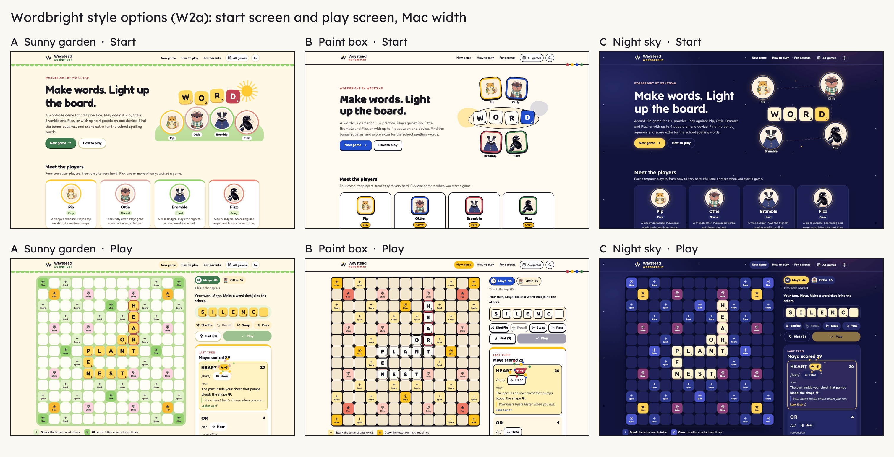

Wordbright style options (W2a)
Mock-ups only: the live game is unchanged. Each option has a start, play and end screen. Use the sun/moon button on any page to switch light and dark. Tap the +5 (or the cheering player) to replay the celebration. The palettes, fonts and contrast checks are in README.md.
A · Sunny garden
Warm yellows, leafy greens, flower pinks; soft round shapes.
B · Paint box
Bold bright colours on cream; chunky tiles with an Ink outline.
C · Night sky
Deep indigo with bright stars; tiles glow like the moon.
Side by side
